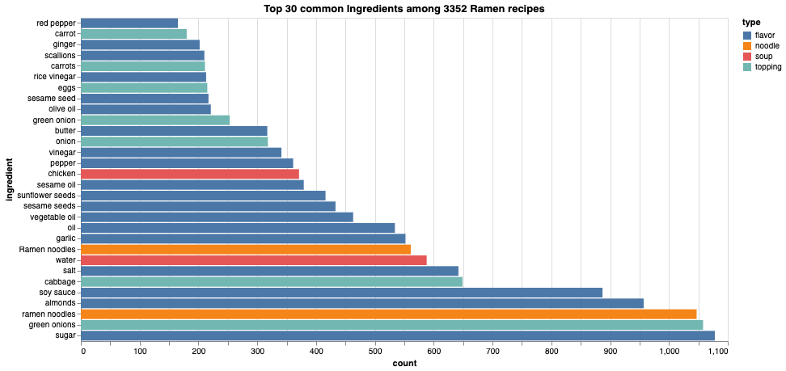
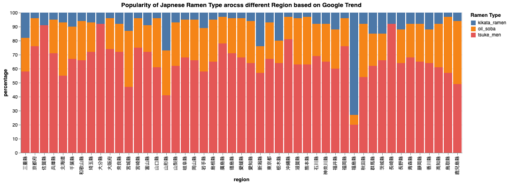

Ramen
_1.jpg)
|
|
| Alternative names | Nankin soba, shina soba, chūka soba |
|---|---|
| Type | Noodle soup |
| Place of origin | Yokohama Chinatown, Japan |
| Region or state | East Asia |
| Serving temperature | Hot |
| Main ingredients | Chinese-style alkaline wheat noodles, meat- or fish-based broth, vegetables or meat |
| Variations | Many variants, especially regional, with various ingredients and toppings |
Ramen (/ˈ rɑːmən/ ) (拉麺, ラーメン or らーめん, rāmen, IPA: [ɾaꜜːmeɴ]) is a Japanese noodle dish. It consists of Chinese-style wheat noodles (or 中華麺, chūkamen) served in a broth; common flavors are soy sauce and miso, with typical toppings including sliced pork (chāshū), nori (dried seaweed), menma (bamboo shoots), and scallions. Ramen has its roots in Chinese noodle dishes.[1] Nearly every region in Japan has its own variation of ramen, such as the tonkotsu (pork bone broth) ramen of Kyushu and the miso ramen of Hokkaido.
History[edit ]
Etymology[edit ]
The word ramen is a Japanese borrowing of the Mandarin Chinese lāmiàn (拉麵, "pulled noodles").[2][3] However, historian Barak Kushner argues that this borrowing occurred retroactively and that various independent Japanese corruptions of Chinese words had already led to Japanese people calling this Chinese noodle dish "ramen".[4] One theory suggests that the Japanese mistook the Chinese particles "le" (了) or "la" (啦, a contraction of 了啊)[4] for a "ra" sound when Chinese cooks would announce "hăo le" (好了) to communicate that a dish was complete. The Japanese then appended the word "men" (麵, meaning 'noodle') to the "ra" to create the word "ramen".[5] Early ramen or ramen-like dishes went by different names, such as Nankin soba (南京そば, literally "Nanjing soba", named after the city which was the then capital of China), Shina soba (支那そば, literally "Chinese soba"), or Chūka soba (中華そば, also meaning "Chinese soba").[6][4][5] Until the 1950s, ramen was most commonly called Shina soba, but today Chūka soba or just ramen (ラーメン) are more common, as the word "支那" (Shina, meaning "China") has acquired a pejorative connotation through its association with Japanese imperialism.[7]
Origin[edit ]
Ramen is a Japanese[8] adaptation of Chinese wheat noodle soups[9] [10][11] [12] [13] and was first recorded to have appeared in Yokohama Chinatown. [14][15] Although the ramen takes its name from lāmiàn, it does not actually evolve from the northern Chinese dish of lamian. The noodles used in ramen known as "chūkamen" are cut rather than hand-pulled.[4] The ramen is derived from southern Chinese noodle dishes such as the char siu tangmian of Guangdong and the rousi tangmian[16][5] [6] of Jiangnan.[17] This is reflective of Yokohama Chinatown's demographics, as most Chinese settlers in the district came from the cities of Guangzhou and Shanghai.[18][19]
One theory says that ramen was introduced to Japan during the 1660s by the Chinese neo-Confucian scholar Zhu Shunsui who served as an advisor to Tokugawa Mitsukuni after he became a refugee in Japan to escape Manchu rule and Mitsukuni became the first Japanese person to eat ramen. Most historians reject this theory as a myth created by the Japanese to embellish the origins of ramen.[20]
According to historians, the more plausible theory is that ramen was introduced to Japan in the late 19th[9] [21] or early 20th centuries by Chinese immigrants living in Yokohama Chinatown. [14][15] In 1910, the first ramen shop named Rairaiken (来々軒) opened in Asakusa, Tokyo, where the Japanese owner employed twelve Cantonese cooks from Yokohama's Chinatown and served the ramen arranged for Japanese customers.[22][23] Early versions were wheat noodles in broth topped with char siu.[9]
By 1900, restaurants serving Chinese cuisine from Guangzhou and Shanghai offered a simple dish of noodles, a few toppings, and a broth flavored with salt and pork bones. Many Chinese living in Japan also pulled portable food stalls, selling ramen and gyōza dumplings to workers. By the mid-1900s, these stalls used a type of a musical horn called a charumera (チャルメラ, from the Portuguese charamela) to advertise their presence, a practice some vendors still retain via a loudspeaker and a looped recording. By the early Shōwa period, ramen had become a popular dish when eating out.[citation needed] According to ramen expert Hiroshi Osaki, the first specialized ramen shop opened in Yokohama in 1910.[12] [24]
Postwar popularization[edit]

After Japan's defeat in World War II, the American military occupied the country from 1945 to 1952.[9] In December 1945, Japan recorded its worst rice harvest in 42 years,[9][25] which caused food shortages as Japan had drastically reduced rice production during the war as production shifted to colonies in China and Formosa island.[9] The US flooded the market with cheap wheat flour to deal with food shortages.[9] From 1948 to 1951, bread consumption in Japan increased from 262,121 tons to 611,784 tons,[9] but wheat also found its way into ramen, which most Japanese ate at black market food vendors to survive as the government food distribution system ran about 20 days behind schedule.[9] Although the Americans maintained Japan's wartime ban on outdoor food vending,[9] flour was secretly diverted from commercial mills into the black markets,[9] where nearly 90 percent of stalls were under the control of gangsters related to the yakuza who extorted vendors for protection money.[9] Thousands of ramen vendors were arrested during the occupation.[9]
In the same period, millions of Japanese troops returned from China and continental East Asia from their posts in the Second Sino-Japanese War. Some of them would have been familiar with wheat noodles.[9] By 1950 wheat flour exchange controls were removed and restrictions on food vending loosened, which further boosted the number of ramen vendors: private companies even rented out yatai starter kits consisting of noodles, toppings, bowls, and chopsticks.[9] Ramen yatai provided a rare opportunity for small scale postwar entrepreneurship.[9] The Americans also aggressively advertised the nutritional benefits of wheat and animal protein.[9] The combination of these factors caused wheat noodles to gain prominence in Japan's rice-based culture.[9] Gradually, ramen became associated with urban life.[9]
Modern period[edit ]
In 1958, instant noodles were invented by Momofuku Ando, the Taiwanese-Japanese founder and chairman of Nissin Foods. Named the greatest Japanese invention of the 20th century in a Japanese poll,[26] instant ramen allowed anyone to make an approximation of this dish simply by adding boiling water.
Beginning in the 1980s, ramen became a Japanese cultural icon and was studied around the world. At the same time, local varieties of ramen were hitting the national market and could even be ordered by their regional names. A ramen museum opened in Yokohama in 1994.[27]
Today ramen is one of Japan's most popular foods, with Tokyo alone containing around 5,000 ramen shops,[9] and more than 24,000 ramen shops across Japan.[28] Tsuta, a ramen restaurant in Tokyo's Sugamo district, received a Michelin star in December 2015.[28]
Types[edit ]
A wide variety of ramen exists in Japan, with geographical and vendor-specific differences even in varieties that share the same name. Although ramen usually has toppings, ramen can be broadly categorized by its two main ingredients: noodles and broth.
Noodles[edit ]

Most noodles are made from four basic ingredients: wheat flour, salt, water, and kansui (かん水) derived from the Chinese jiǎnshuǐ (鹼水) a type of alkaline mineral water, containing sodium carbonate and usually potassium carbonate, as well as sometimes a small amount of phosphoric acid. Although ramen noodles and Udon noodles are both made with wheat and are similar, they are different kinds of noodle.
The kansui is the distinguishing ingredient in ramen noodles, and originated in Inner Mongolia, where some lakes contain large amounts of these minerals and whose water is said to be perfect for making these noodles. Making noodles with kansui lends them a yellowish hue as well as a firm texture.[citation needed] Eggs may also be substituted for kansui. Some noodles are made with neither eggs nor kansui and should only be used for yakisoba, as they have a weaker structure and are more prone to soaking up moisture and becoming extremely soft when served in soup.[citation needed]
Ramen comes in various shapes and lengths. It may be thick, thin, or even ribbon-like, as well as straight or wrinkled.
Traditionally, ramen noodles were made by hand, but with growing popularity many ramen restaurants prefer to use noodle-making machines to meet the increased demand and improve quality. Automatic ramen-making machines imitating manual production methods have been available since the mid. 20th century produced by such Japanese manufacturers as Yamato MFG. and others.[29]
Soup[edit ]

Ramen soup is generally made from stock based on chicken or pork, combined with a variety of ingredients such as pork bones, katsuobushi (skipjack tuna flakes), niboshi (dried baby sardines), [30] beef bones, shiitake, onions, and kombu (kelp). Some modern ramen broths can also be vegetable-based. Tare is often added to broth to make the soup.
- Tonkotsu (豚骨, "pork bone"; not to be confused with tonkatsu) soup is broth with a typically translucent white colored appearance. Similar to the Chinese baitang (白湯), it has a thick broth made from boiling pork bones, fat, and collagen over high heat for many hours, which suffuses the broth with a hearty pork flavor and a creamy consistency that rivals milk, melted butter or gravy (depending on the shop). Although Tonkotsu is merely a kind of broth, some people consider tonkotsu ramen (specialty of Kyushu, its birthplace) a distinct flavor category. [31]
- Torigara (鶏がら, "Chicken bone") soup based on chicken bone broth originated mainly in Tokyo. It is often used as a base for salt and shoyu ramen.[32]
Flavors[edit ]


The resulting combination is generally divided into several categories. Although newer and older variations often make this categorization less clear-cut, a description of said old variations is as follows:
- Shio (塩, "salt") ramen is the oldest of the four types.[31] It has a pale, clear, yellowish broth made with plenty of salt and any combination of chicken, vegetables, fish, and seaweed. Occasionally pork bones are also used, but they are not boiled as long as they are for tonkotsu ramen, so the soup remains light and clear. Chāshū is sometimes swapped for lean chicken meatballs, and pickled plums and kamaboko (a slice of processed fish roll sometimes served as a frilly white circle with a pink or red spiral called narutomaki) are popular toppings as well. Noodle texture and thickness varies among shio ramen, but they are usually straight rather than curly. "Hakodate Ramen" is a well-known version of shio ramen in Japan.
- Shōyu (醤油, "soy sauce") ramen has a clear brown broth, based on a chicken and vegetable (or sometimes fish or beef) stock with plenty of soy sauce added resulting in a soup that is tangy, salty, and savory yet still fairly light on the palate. Shōyu ramen usually has curly noodles rather than straight ones, although this is not always the case. It is often adorned with marinated bamboo shoots or menma, scallions, ninjin (carrot), kamaboko (fish cakes), nori (seaweed), boiled eggs, bean sprouts or black pepper; occasionally the soup will also contain chili oil or Chinese spices, and some shops serve sliced beef instead of the usual chāshū.
- Miso (味噌) ramen reached national prominence around 1965. This uniquely Japanese ramen, which was developed in Sapporo Hokkaido, features a broth that combines copious miso and is blended with oily chicken or fish broth – and sometimes with tonkotsu or lard – to create a thick, nutty, slightly sweet and very hearty soup. Miso ramen broth tends to have a robust, tangy flavor, so it stands up to a variety of flavorful toppings: spicy bean paste or tōbanjan (豆瓣醤), butter and corn, leeks, onions, bean sprouts, ground pork, cabbage, sesame seeds, white pepper, chilli and chopped garlic are common. The noodles are typically thick, curly, and slightly chewy.
- Karē (カレー, "curry") ramen is a relative newcomer, cooked with curry soup. In Japan, several cities claim to be its place of origin. The city of Muroran claims it originated there in 1965[33] (see also Muroran curry ramen), while the city of Sanjō city claims to have had kare ramen for over 80 years,[34] and the city of Katori also claims to have been the site of its origin.[35] Curry soup is mainly made with pork bones and vegetables and is seasoned with curry. The noodles are thick and curly. Toppings include chāshū, wakame, and bean sprouts.
Toppings[edit ]
After basic preparation, ramen can be seasoned and flavored with any number of toppings, including but not limited to:[36]
- Chāshū (sliced barbecued or braised pork)
- Negi (green onion)
- Takana-zuke (Pickled and seasoned mustard leaves)
- Seasoned (usually salted) boiled egg (Soy egg ("Ajitsuke Tamago"))
- Bean or other sprouts
- Menma (lactate-fermented bamboo shoots)
- Kakuni (braised pork cubes or squares)
- Kikurage (wood ear mushroom)
- Nori (dried seaweed)
- Kamaboko (formed fish paste, often in a pink and white spiral called narutomaki)
- Squid
- Umeboshi (pickled plum)
- Corn
- Butter
- Wakame (a type of seaweed)
- Olive oil
- Sesame oil
- Soy sauce
- Other types of vegetables
Preference[edit ]
Seasonings commonly added to ramen are white pepper, black pepper, butter, chili pepper, sesame seeds, and crushed garlic.[37] Soup recipes and methods of preparation tend to be closely guarded secrets.
Most tonkotsu ramen restaurants offer a system known as kae-dama (替え玉), where customers who have finished their noodles can request a "refill" (for a few hundred yen more) to be put into their remaining soup.[38]
Regional variations[edit]
While standard versions of ramen are available throughout Japan since the Taishō period, the last few decades have shown a proliferation of regional variations, commonly referred to as gotouchi ramen (ご当地ラーメン). Some of these which have gone on to national prominence are:
- Sapporo, the capital of Hokkaido, is especially famous for its ramen. Most people in Japan associate Sapporo with its rich miso ramen, which was invented there and which is ideal for Hokkaido's harsh, snowy winters. Sapporo miso ramen is typically topped with sweetcorn, butter, bean sprouts, finely chopped pork, and garlic, and sometimes local seafood such as scallop, squid, and crab. Hakodate, another city of Hokkaido, is famous for its salt flavored ramen,[39] while Asahikawa in the north of the island offers a soy sauce-flavored variation.[40] In Muroran, many ramen restaurants offer Muroran curry ramen. [41]
- Kitakata ramen is known for its rather thick, flat, curly noodles served in a pork-and-niboshi broth. The area within the former city limits has the highest per-capita number of ramen establishments. Ramen has such prominence in the region that locally, the word soba usually refers to ramen, and not to actual soba which is referred to as nihon soba ("Japanese soba").
- Tokyo-style ramen consists of slightly thin, curly noodles served in a soy-flavored chicken broth. The Tokyo style broth typically has a touch of dashi, as old ramen establishments in Tokyo often originate from soba eateries. Standard toppings are chopped scallion, menma, sliced pork, kamaboko, egg, nori, and spinach. Ikebukuro, Ogikubo and Ebisu are three areas in Tokyo known for their ramen.[citation needed]
- Yokohama ramen specialty is called Ie-kei (家系). It consists of thick, straight noodles served in a soy flavored pork broth similar to tonkotsu, sometimes referred to as, tonkotsu-shoyu. The standard toppings are roasted pork (chāshū), boiled spinach, sheets of nori, often with shredded Welsh onion (negi) and a soft or hard boiled egg. It is traditional for customers to customize the softness of the noodles, the richness of the broth and the amount of oil they want.
- Wakayama ramen in the Kansai region has a broth made from soy sauce and pork bones.[42]
- Hakata ramen originates from Hakata district of Fukuoka city in Kyushu. It has a rich, milky, pork-bone tonkotsu broth and rather thin, non-curly and resilient noodles. Often, distinctive toppings such as crushed garlic, beni shōga (pickled ginger), sesame seeds, and spicy pickled mustard greens (karashi takana) are left on tables for customers to serve themselves. Ramen stalls in Hakata and Tenjin are well known within Japan. Recent trends have made Hakataramen one of the most popular types in Japan, and several chain restaurants specializing in Hakata ramen can be found all over the country.
- Tofu ramen is a specialty of Iwatsuki ward in Saitama City.
-

Tokyo-style ramen
-

Kitakata ramen
-

Hakata ramen with tonkotsu soup
-

Wakayama ramen
-

Tsukemen dipping ramen
-

Aburasoba ("oiled noodles")
-

Takayama ramen
-

Hiyashi (chilled) ramen
-

Butter corn ramen, specialty of Hokkaido
-

Sapporo-style ramen
-

Muroran curry ramen


Related dishes[edit]
There are many related, Chinese-influenced noodle dishes in Japan. The following are often served alongside ramen in ramen establishments. They do not include noodle dishes considered traditionally Japanese, such as soba or udon, which are almost never served in the same establishments as ramen.
- Nagasaki champon. The noodles are thicker than ramen but thinner than udon. Champon is topped with a variety of ingredients, mostly seafood, stir-fried and dressed in a starchy sauce. The stir-fried ingredients are poured directly over the cooked noodles, with the sauce acting as a soup.
- Tan-men is a mild, usually salty soup, served with a mix of sautéed vegetables and seafood/pork. Not to be confused with the tantan-men (see after).
- Wantan-men has long straight noodles and wonton, served in a mild, usually salty soup.
- Tsukemen ("dipping noodles"). The noodles and soup are served in separate bowls. The diner dips the noodles in the soup before eating. Can be served hot or chilled.
- Tantan-men (担担麺). Japanese version of dan dan noodles, itself a Szechuan specialty. Ramen in a reddish, spicy chili and sesame soup, usually containing minced pork, garnished with chopped scallion and chili and occasionally topped with spinach or Bok Choi (chingensai).
- Sūrātanmen or sanrātanmen (酸辣湯麺, "noodles in hot and sour soup") is very similar to Szechuan hot and sour soup, but served with long noodles. The topping ingredients are sautéed and a thickener is added before the mix is poured on the soup and the noodles.
- Abura soba ("oil-noodles"). Ramen and toppings served without the soup, but with a small quantity of oily soy-based sauce instead.
- Hiyashi-chūka (冷やし中華, "chilled Chinese"). Also known as reimen, esp. in western Japan. A summer dish of chilled ramen on a plate with various toppings (typically thin strips of omelet, ham, cucumber and tomato) and served with a vinegary soy dressing and karashi (Japanese mustard). It was first produced at the Ryutei, a Chinese restaurant in Sendai.
Restaurants in Japan[edit]

Ramen is offered in various types of restaurants and locations including ramen shops, izakaya drinking establishments, lunch cafeterias, karaoke halls, and amusement parks. Many ramen restaurants only have a counter and a chef. In these shops, the meals are paid for in advance at a ticket machine to streamline the process.[43]
However, the best quality ramen is usually only available in specialist ramen-ya restaurants. Some restaurants also provide Halal ramen (using chicken) in Osaka and Kyoto. As ramen-ya restaurants offer mainly ramen dishes, they tend to lack variety in the menu. Besides ramen, some of the dishes generally available in a ramen-ya restaurant include other dishes from Japanese Chinese cuisine such as fried rice (called Chahan or Yakimeshi), gyoza (Chinese dumplings), and beer. Ramen-ya interiors are often filled with Chinese-inspired decorations. [44]
During the COVID-19 pandemic, many ramen restaurants were temporarily closed, with 34 chains filing for bankruptcy by September 2020. Ramen restaurants are typically narrow and seat customers closely, making social distancing difficult.[45]
Outside Japan[edit ]
Ramen became popular in China where it is known as rìshì lāmiàn (日式拉麵, lit. "Japanese-style lamian"). Restaurant chains serve ramen alongside distinctly Japanese dishes, such as tempura and yakitori. Interestingly, in Japan, these dishes are not traditionally served with ramen, but gyoza, kara-age and others from Japanese Chinese cuisine.
In Korea, ramen is called ramyeon (라면 / 拉麵). There are different varieties, such as kimchi-flavored ramyeon. While usually served with egg or vegetables such as carrots and scallions some restaurants serve variations of ramyeon containing additional ingredients such as dumplings, tteok, or cheese as toppings.[46]
Outside of Asia, particularly in areas with a large demand for Asian cuisine, there are restaurants specializing in Japanese-style foods such as ramen noodles. For example, Wagamama, a UK-based restaurant chain serving pan-Asian food, serves a ramen noodle soup and in the United States and Canada, Jinya Ramen Bar serves tonkotsu ramen.
Instant ramen[edit ]

Instant ramen noodles were exported from Japan by Nissin Foods starting in 1971, bearing the name "Oodles of Noodles".[47] One year later, it was re-branded "Nissin Cup Noodles", packaged in a foam food container (It is referred to as Cup Ramen in Japan), and subsequently saw a growth in international sales. Over time, the term "ramen" became used in North America to refer to other instant noodles. While some research has claimed that consuming instant ramen two or more times a week increases the likelihood of developing heart disease and other conditions, including diabetes and stroke, especially in women, those claims have not been reproduced and no study has isolated instant ramen consumption as an aggravating factor.[48][49] However, instant ramen noodles, known to have a serving of 43 g, consist of very high sodium. [50] At least 1,760 mg of sodium are found in one packet alone. It consists of 385k calories, 55.7 g of carbohydrates, 14.5 g of total fat, 6.5 g of saturated fat, 7.9 g of protein, and 0.6 mg of thiamine.[51]
Canned version[edit]
In Akihabara, Tokyo, vending machines distribute warm ramen in a steel can known as ramen kan (らーめん缶). It is produced by a popular local ramen restaurant in flavors such as tonkotsu and curry, and contains noodles, soup, menma, and pork. It is intended as a quick snack, and includes a small folded plastic fork. [52]
In popular culture[edit]
Movies[edit ]
In the 1985 film Tampopo, a truck driver, Goro, helps a woman called Tampopo create the perfect ramen restaurant.[53]
Ramen and how it is made was the subject of the 2008 feature film The Ramen Girl, starring Brittany Murphy.
Emoji[edit ]
In October 2010, an emoji was approved for Unicode 6.0 U+1F35C 🍜 STEAMING BOWL for "Steaming Bowl", that depicts Japanese ramen noodles in a bowl of steaming broth with chopsticks.[54] In 2015, the icon was added to Emoji 1.0.[55]
Museum[edit ]

The Shin-Yokohama Rāmen Museum is a unique museum about ramen, in the Shin-Yokohama district of Kōhoku-ku, Yokohama.[56]
See also[edit ]
References[edit ]
- ^ "日本のラーメンの歴史 - 新横浜ラーメン博物館". Raumen.co.jp. Retrieved 25 May 2022.
- ^ "Unearth the secrets of ramen at Japan's ramen museum". Archived from the original on 28 June 2018. Retrieved 7 March 2018.
- ^ Kodansha encyclopedia of Japan, Volume 6 (1st ed.). Tokyo: Kodansha. 1983. p. 283. ISBN 978-0-87011-626-1.
- ^ Jump up to: a b c d Kushner, Barak (2012). Slurp! : a social and culinary history of ramen - Japan's favorite noodle soup. Leiden: Global Oriental. ISBN 978-90-04-22098-0. OCLC 810924622.
- ^ Jump up to: a b c "Part 1: China Origin". Ramen Culture. Retrieved 20 July 2022.
- ^ Jump up to: a b Media, USEN. "Indespensable Knowledge For Every Ramen Lover! A Glossary with Shop Recommendations". SAVOR JAPAN. Retrieved 20 July 2022.
- ^ Cwiertka, Katarzyna Joanna (2006). Modern Japanese cuisine: food, power and national identity. Reaktion Books. p. 144. ISBN 978-1-86189-298-0.
However, Shina soba acquired the status of 'national' dish in Japan under a different name: rāmen. The change of name from Shina soba to rāmen took place during the 1950s and '60s. The word Shina, used historically in reference to China, acquired a pejorative connotation through its association with Japanese imperialist association in Asia and was replaced with the word Chūka, which derived from the Chinese name for the People's Republic. For a while, the term Chūka soba was used, but ultimately the name rāmen caught on, inspired by the chicken-flavored instant version of the dish that went on sale in 1958 and spread nationwide in no time.
- ^ "Ramen definition and meaning | Collins English Dictionary". www.collinsdictionary.com. Retrieved 25 August 2019.
- ^ Jump up to: a b c d e f g h i j k l m n o p q r s t "How Did Ramen Become Popular?". Atlas Obscura. 2018.
- ^ Rupelle, Guy de la (2005). Kayak and land journeys in Ainu Mosir: Among the Ainu of Hokkaido. Lincoln, NE: iUniverse. p. 116. ISBN 978-0-595-34644-8.
- ^ Asakawa, Gil (2004). Being Japanese American. Berkeley, California: Stone Bridge Press. p. 49. ISBN 978-1-880656-85-3.
- ^ Jump up to: a b NHK World. Japanology Plus: Ramen. 2014. Accessed 2015-03-08.
- ^ Okada, Tetsu (202). ラーメンの誕生 [The birth of Ramen] (in Japanese). Chikuma Shobō. ISBN 978-4480059307.
- ^ Jump up to: a b Okuyama, Tadamasa (2003). 文化麺類学・ラーメン篇 [Cultural Noodle-logy;Ramen] (in Japanese). Akashi Shoten. ISBN 978-4750317922.
- ^ Jump up to: a b Kosuge, Keiko (1998). にっぽんラーメン物語 [Japanese Ramen Story] (in Japanese). Kodansha. ISBN 978-4062563024.
- ^ "Japanese Noodles (No. 4)". Kikkoman Corporation (in Japanese). Retrieved 20 July 2022.
- ^ "榨菜肉丝面的南北差异及制作方法". Sohu.
- ^ "Yokohama Chinatown Part 2 - Yokohama, Kanagawa". JapanTravel. Retrieved 20 July 2022.
- ^ "Yokohama Chinatown". THE GATE. Retrieved 20 July 2022.
- ^ Solt, George (22 February 2014). Untold History of Ramen. University of California Press. doi:10.1525/california/9780520277564.001.0001. ISBN 9780520277564.
- ^ Shin-Yokohama Raumen Museum
- ^ Japanese ramen secret history "Nikkei Sangyo Shimbun premium series,(in Japanese). 『日本ラーメン秘史』日経プレミアムシリーズ、2011
- ^ 新横浜ラーメン博物館「日本のラーメンの歴史」
- ^ Osaki also wrote the first specialized ramen shop was RAIRAIKEN at Asakusa, Tokyo. View the article on Osaki's blog:日本初のラーメン専門店「浅草来々軒」の流れを汲む店 written on 2012-12-28.
- ^ Griffiths, Owen (29 August 2018). "Need, Greed, and Protest in Japan's Black Market, 1938-1949". Journal of Social History. 35 (4): 825–858. doi:10.1353/jsh.2002.0046. JSTOR 3790613. S2CID 144266555.
- ^ "Japan votes noodle the tops". BBC News. 12 December 2000. Retrieved 25 April 2007. BBC News
- ^ Japanorama, Series 3, Episode 4. BBC Three, 9 April 2007
- ^ Jump up to: a b Demetriou, Danielle (23 February 2016). "The holy grail of ramen dishes". BBC Travel. Retrieved 26 August 2018.
- ^ "Fusion of cultures nets stellar ramen at Ichimi". miamiherald. Retrieved 18 January 2019.
- ^ "10 Great Tastes of Japan" (PDF).
Ministry of Agriculture, Forestry and Fisheries; Government of Japan. 18 June 2010. p11: Noodles. Archived (PDF) from the original on 28 August 2019. Retrieved 13 July 2021.
- Whole web page which links to the PDF above: "Publications". Ministry of Agriculture, Forestry and Fisheries; Government of Japan. Japanese Cuisine and Ingredients. Archived from the original on 1 November 2020. Retrieved 13 July 2021.
- ^ Jump up to: a b Davis, Elizabeth (12 February 2016). "6 Glorious Types of Ramen You Should Know". Tastemade. Retrieved 31 July 2020.
- ^ "Ramen Guide: Types, Regional Varieties & Tokyo's Best Ramen Restaurants". Ramen Guide. 5 March 2020. Retrieved 15 August 2021.
- ^ "Adventures in ramen: Japan's ever-changing soup scene". CNN Travel. 10 February 2015. Retrieved 8 March 2019.
- ^ "Major Ramen Powerhouse Well-Known Only to Those in the Know! The 5 Big Ramen in Niigata". WOW!JAPAN. NTT Docomo. 28 September 2017. Retrieved 8 March 2019.
- ^ "Kare Ramen". oksfood - Japanese Food Guide. Retrieved 8 March 2019.
- ^ "40 Best Ramen Toppings for Your Homemade Noodle Soup". Recipe.net. Retrieved 2 May 2022.
- ^ Hou, Gary G. (16 February 2011). Asian Noodles: Science, Technology, and Processing. John Wiley & Sons. ISBN 978-1-118-07435-0.
- ^ "Hakata Ramen (Nagahama Ramen) FAQ". Mukai.dameningen.org. Archived from the original on 1 April 2012. Retrieved 18 November 2012.
- ^ Nate (17 December 2009). "函館らーめん大門 (Hakodate Ramen Daimon)". Ramenate!. Retrieved 18 November 2012.
- ^ "Asahikawa Travel: Asahikawa Ramen". japan-guide.com. Retrieved 26 September 2013.
- ^ 加盟店一覧 （50音順） (24 January 2013). "室蘭カレーラーメンの会 » 北海道ラーメン第４の味を目指して・・・". Muroran-curryramen.com. Retrieved 28 September 2015.
- ^ Hiufu Wong, Maggie (7 June 2013). "10 things that make Wakayama Japan's best kept secret". CNN Travel. Cable News Network. Turner Broadcasting System, Inc. Retrieved 22 November 2014.
- ^ Organization, Japan National Tourism. "Ramen 101". Japan Travel. Retrieved 25 June 2019.
- ^ Organization, Japan National Tourism. "Ramen". Japan Travel. Retrieved 25 June 2019.
- ^ McCurry, Justin (13 November 2020). "Return of a ramen pioneer gives boost to Japan's Covid-hit restaurant sector". The Guardian. ISSN 0261-3077. Retrieved 13 November 2020.
- ^ Back to Korean-Style Ramyeon at Nenassi's Noodle Bar
- ^ "Inventor of instant noodles dies" BBC News. 6 January 2007
- ^ "Harvard Study Reveals Just How Much Damage Instant Noodles Do to Your Body". Snopes.com. 6 July 2016. Retrieved 3 March 2017.
- ^ "Health Column: The risks behind those ramen noodles". 13 September 2014. Retrieved 31 January 2016.
- ^ "Instant Noodles or Ramen", Asian Foods, CRC Press, pp. 73–77, 5 April 1999, doi:10.1201/9781482278798-28, ISBN 9780429179143, retrieved 2 November 2021
- ^ "Private and General Acute Care Medical Centre | Parkway East Hospital". www.parkwayeast.com.sg. Retrieved 2 November 2021.
- ^ "Ramen-can: a topic in Akihabara". Archived from the original on 24 July 2008. Global Pop Culture
- ^ "Tampopo". imdb.com. Retrieved 19 October 2021.
- ^ "Picture This: A List of Japanese Emoji". Nipppon.com. 29 April 2019.
- ^ "Steaming Bowl Emoji". Emojipedia. Retrieved 10 March 2017.
- ^ "Ramen Museum". Retrieved 18 June 2008.
Further reading[edit]
- Orkin, Ivan (2013). Ivan Ramen: Love, Obsession, and Recipes from Tokyo's Most Unlikely Noodle Joint. Berkeley, Calif.: Ten Speed Press. ISBN 9781607744467. OCLC 852399997.
- "The art of the slurp (or, How to eat ramen)". The Splendid Table. 4 April 2014. Retrieved 7 April 2014. Interview with the author.
How to Customize your Ramen - Toppings and Japanese Vocabulary
 Definitions from Wiktionary
Definitions from Wiktionary
.png) Media from Commons
Media from Commons
 Data from Wikidata
Data from Wikidata